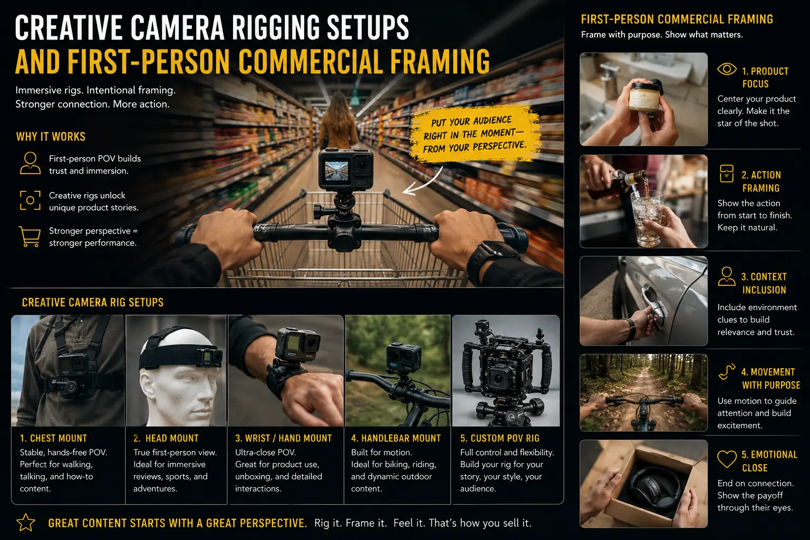
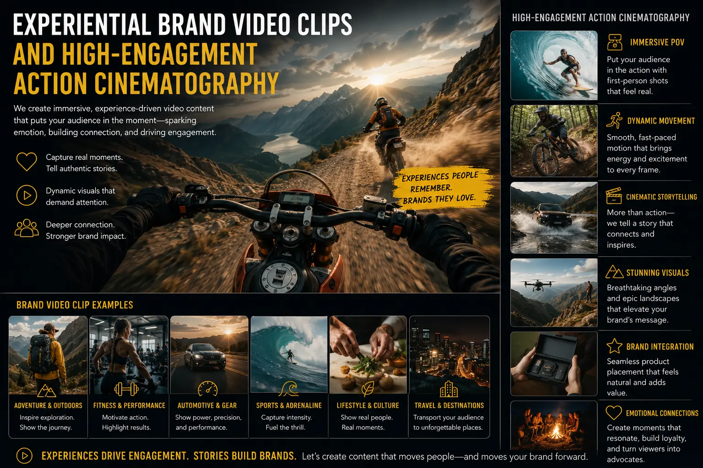

Camera Rigging Frameworks That Put Your Audience in the Creator's Shoes
The Rise of First-Person Video in Commercial Content
The most engaging content on social media in 2026 shares a common visual signature: it is filmed from the perspective of the person performing the action. Whether it is a chef's hands assembling a dish, a craftsperson's fingers shaping a material, a product being unboxed from the buyer's viewpoint, or a camera walking through a space as if the viewer were physically there — first-person, point-of-view content consistently outperforms traditional third-person cinematography on every engagement metric: completion rates, shares, saves, comments, and conversion rates.
This is not coincidental — it is neurological. When a viewer watches a video filmed from a first-person perspective, their brain engages a process called embodied simulation: the mirror neuron system responds to the visual input as if the viewer were personally performing the observed action. The viewer does not merely watch someone unbox a product — they experience the unboxing. They do not merely see a craft being performed — they feel their own hands performing it. This neurological immersion produces dramatically higher emotional engagement and product desirability.
Immersive POV Video Production is the commercial application of this insight — the discipline of designing, rigging, and filming brand content from the creator's, user's, or craftsperson's perspective to produce experiential brand video clips that make the viewer feel like a participant rather than a spectator. It requires specialised Creative Camera Rigging Setups that position cameras where traditional cinematography cannot — on bodies, hands, tools, and workspaces.
The Rigging Toolkit: Camera Mounts for Every Perspective
The technical foundation of First-Person Commercial Framing is the camera rig — the physical mounting system that positions the camera at the exact perspective needed to create the immersive first-person effect. Each rig type produces a distinct visual character and serves specific content applications:
- Chest-mounted rig (chest-cam). The most versatile and widely used rig for commercial POV content. A Chest-cam marketing video positions the camera at sternum height, capturing the wearer's hands, workspace, and the product being interacted with — while maintaining enough height to include contextual environmental elements. This perspective is ideal for product creation content, cooking demonstrations, unboxing sequences, desk-based work, and any scenario where hands-on interaction with a product is the primary visual subject.
- Head-mounted rig. Positions the camera at eye level, capturing the full visual field as the wearer sees it. This rig produces the most immersive first-person perspective — ideal for walkthroughs (factory tours, studio tours, property tours), action and lifestyle content (sports, outdoor activities, travel), and any scenario where the viewer needs to feel like they are physically present in the environment. Head-mounted rigs require careful stabilisation to counteract head movement.
- Wrist or hand-mounted micro-camera. Provides extreme close-up POV of fine hand work — watchmaking, jewelry crafting, calligraphy, electronics assembly. This rig captures details that even chest-cams miss, showing the viewer exactly what the craftsperson's hands are doing at the closest possible perspective. Ideal for behind-the-lens product creation content that showcases manufacturing skill and product quality.
- Magnetic or clamp-mounted action cameras. Attach to tools, equipment, vehicles, or workspace surfaces to capture unique perspectives that no body-mounted rig can achieve — the viewpoint of a power tool, a mixing machine, a vehicle dashboard, or a workbench. These auxiliary angles supplement body-mounted POV footage with establishing and detail shots.
Immersive Viewer Experience
Immersive POV Video Production triggers embodied simulation in the viewer's brain — creating emotional engagement and product desire that traditional third-person cinematography cannot match.
High Social Engagement
High-engagement action cinematography from first-person perspectives consistently achieves 2-4x higher completion rates, shares, and saves compared to equivalent third-person content.
Authentic Brand Storytelling
Creating lifestyle brand assets from the participant's perspective makes brand content feel authentic and personal — the visual language of genuine experience rather than staged performance.
Product Reveal Impact
Filming unboxing frames from the buyer's POV lets the viewer experience the discovery and tactile pleasure of opening premium packaging as if they were holding the product themselves.

Technical Execution: Stabilisation, Audio, and Lighting
POV filming introduces unique technical challenges that standard cinematography does not face. The camera is attached to a moving human body rather than a stable tripod, the lighting cannot be controlled as precisely when the camera's perspective changes with every body movement, and audio capture must account for the wearer's proximity and motion. Solving these challenges is what separates amateur POV content from professional experiential brand video clips:
- Stabilisation: hardware plus software. Use cameras with built-in electronic image stabilisation (EIS) as the first layer — GoPro HyperSmooth, DJI Action camera RockSteady, or Insta360 FlowState. Mount the camera on vibration-dampened brackets with rubber isolation grommets that absorb high-frequency micro-vibrations from walking, breathing, and hand movement. In post-production, apply software stabilisation at moderate settings — enough to smooth jarring impacts without eliminating the natural motion that makes POV content feel authentic.
- Audio capture for moving subjects. Body-mounted cameras with built-in microphones capture excessive wind noise, clothing rustle, and breathing. Use a separate wireless lavalier microphone clipped to the wearer's collar or use an external directional microphone mounted on the rig with a windshield. Record audio on a separate channel from the camera's built-in capture, syncing in post-production for maximum quality control.
- Lighting for dynamic perspectives. Because the camera's viewpoint changes with every body movement, fixed lighting setups may produce inconsistent exposure across the footage. Use a combination of environmental lighting (overhead studio lights set for even, diffused illumination) and a small LED panel mounted on the rig itself to provide consistent fill light that moves with the camera.
- Wide-angle lens selection. POV footage requires wide-angle lenses (typically 12-16mm equivalent) to capture the full visual field and create the immersive perspective that defines first-person content. Select lenses with minimal barrel distortion to prevent the fisheye effect that makes POV content look amateurish. Cameras with in-body lens correction (GoPro Linear mode, DJI Dewarp) eliminate this distortion optically.
Content Applications: From Unboxing to Factory Tours
First-Person Commercial Framing applies across a wide spectrum of commercial content formats — each requiring a specific rigging approach and production workflow:
Product Unboxing and Reveals
- Film from a chest-cam perspective with the product packaging on a clean desk surface — capturing the viewer's hands opening, unwrapping, and revealing the product.
- Slow the pacing deliberately — each layer of packaging should be a moment of anticipation, not a rushed tear.
- Capture unboxing frames that emphasise material textures, packaging details, and the first moment the product is fully revealed.
- Include close-up inserts (from a secondary wrist-cam or macro angle) of premium details — embossed logos, product finishes, accessory compartments.
Craft and Creation Processes
- Position the chest-cam to capture the full workspace — hands, tools, materials, and the product taking shape.
- Film behind-the-lens product creation content that shows the skill, precision, and care that goes into manufacturing — making the viewer feel like they are the craftsperson.
- Use time-lapse segments from the same POV angle to compress long processes into satisfying visual sequences.
- Add ambient Foley audio — tool sounds, material textures, workspace atmosphere — to create a multi-sensory experience.
Lifestyle and Action Content
- Use head-mounted rigs for action and lifestyle content — outdoor activities, travel experiences, fitness routines — that place the viewer inside the experience.
- Create lifestyle brand assets that associate the brand with aspirational activities and environments from the participant's own perspective.
- Apply high-engagement action cinematography techniques — speed ramps, audio sync cuts, and dynamic transitions — to maintain visual energy.
- Combine POV footage with traditional third-person angles in the edit to provide context and visual variety while maintaining immersive impact.

Conclusion
Immersive POV Video Production represents one of the most powerful and underutilised tools in commercial video production. By investing in Creative Camera Rigging Setups — chest-cams, head-mounts, wrist cameras, and auxiliary action cameras — brands can produce experiential brand video clips that trigger embodied simulation in the viewer's brain, creating emotional engagement and product desire that traditional cinematography cannot match.
From Chest-cam marketing video for product creation and unboxing frames to behind-the-lens product creation craft content and high-engagement action cinematography for lifestyle campaigns, First-Person Commercial Framing transforms the viewer from spectator to participant — producing lifestyle brand assets with dramatically higher engagement, completion rates, and conversion potential.
At The PhD Ads, we design and execute Creative Camera Rigging Setups for Indian brands — building custom POV filming rigs, managing on-set rigging and stabilisation, and producing experiential brand video clips that put your audience inside the experience.
Key Topics
Put Your Audience Inside the Experience
At The PhD Ads, we design custom POV camera rigs and produce immersive first-person brand content — from product unboxing and craft creation to lifestyle action cinematography.
Email: team@e2o.in